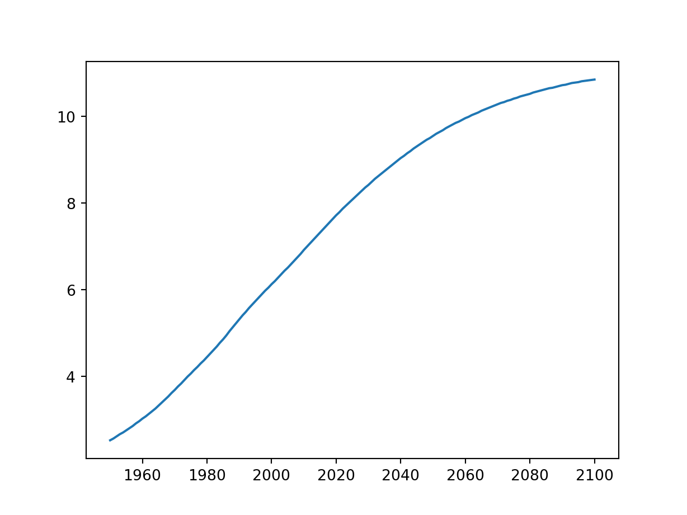

# Print the last item from year and pop
year = [1950, 1951, 1952, 1953, 1954, 1955, 1956, 1957, 1958, 1959,
1960, 1961, 1962, 1963, 1964, 1965, 1966, 1967, 1968, 1969, 1970,
1971, 1972, 1973, 1974, 1975, 1976, 1977, 1978, 1979, 1980, 1981,
1982, 1983, 1984, 1985, 1986, 1987, 1988, 1989, 1990, 1991, 1992,
1993, 1994, 1995, 1996, 1997, 1998, 1999, 2000, 2001, 2002, 2003,
2004, 2005, 2006, 2007, 2008, 2009, 2010, 2011, 2012, 2013, 2014,
2015, 2016, 2017, 2018, 2019, 2020, 2021, 2022, 2023, 2024, 2025,
2026, 2027, 2028, 2029, 2030, 2031, 2032, 2033, 2034, 2035, 2036,
2037, 2038, 2039, 2040, 2041, 2042, 2043, 2044, 2045, 2046, 2047,
2048, 2049, 2050, 2051, 2052, 2053, 2054, 2055, 2056, 2057, 2058,
2059, 2060, 2061, 2062, 2063, 2064, 2065, 2066, 2067, 2068, 2069,
2070, 2071, 2072, 2073, 2074, 2075, 2076, 2077, 2078, 2079, 2080,
2081, 2082, 2083, 2084, 2085, 2086, 2087, 2088, 2089, 2090, 2091,
2092, 2093, 2094, 2095, 2096, 2097, 2098, 2099, 2100]
pop = [2.53, 2.57, 2.62, 2.67, 2.71, 2.76, 2.81, 2.86, 2.92, 2.97, 3.03,
3.08, 3.14, 3.2, 3.26, 3.33, 3.4, 3.47, 3.54, 3.62, 3.69, 3.77,
3.84, 3.92, 4, 4.07, 4.15, 4.22, 4.3, 4.37, 4.45, 4.53, 4.61,
4.69, 4.78, 4.86, 4.95, 5.05, 5.14, 5.23, 5.32, 5.41, 5.49,
5.58, 5.66, 5.74, 5.82, 5.9, 5.98, 6.05, 6.13, 6.2, 6.28, 6.36,
6.44, 6.51, 6.59, 6.67, 6.75, 6.83, 6.92, 7, 7.08, 7.16, 7.24,
7.32, 7.4, 7.48, 7.56, 7.64, 7.72, 7.79, 7.87, 7.94, 8.01, 8.08,
8.15, 8.22, 8.29, 8.36, 8.42, 8.49, 8.56, 8.62, 8.68, 8.74, 8.8,
8.86, 8.92, 8.98, 9.04, 9.09, 9.15, 9.2, 9.26, 9.31, 9.36, 9.41,
9.46, 9.5, 9.55, 9.6, 9.64, 9.68, 9.73, 9.77, 9.81, 9.85, 9.88, 9.92,
9.96, 9.99, 10.03, 10.06, 10.09, 10.13, 10.16, 10.19, 10.22, 10.25,
10.28, 10.31, 10.33, 10.36, 10.38, 10.41, 10.43, 10.46, 10.48, 10.5,
10.52, 10.55, 10.57, 10.59, 10.61, 10.63, 10.65, 10.66, 10.68, 10.7,
10.72, 10.73, 10.75, 10.77, 10.78, 10.79, 10.81, 10.82, 10.83, 10.84, 10.85]
print(year[-1])2100print(pop[-1])10.85# Import matplotlib.pyplot as plt
import matplotlib.pyplot as plt
# Make a line plot: year on the x-axis, pop on the y-axis
plt.plot(year, pop)
# Display the plot with plt.show()
plt.show()